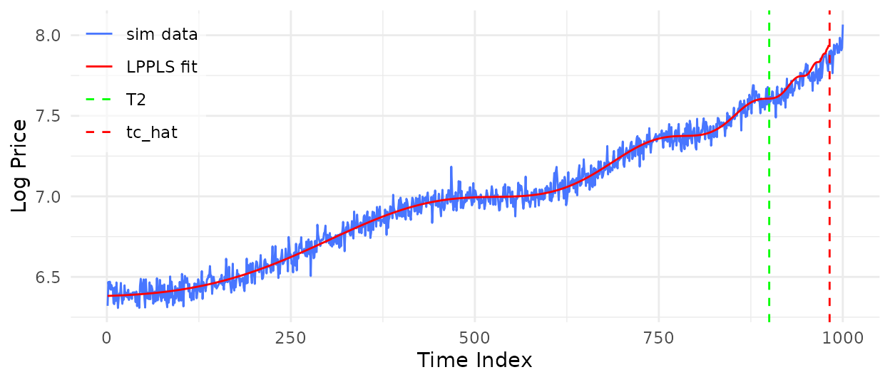
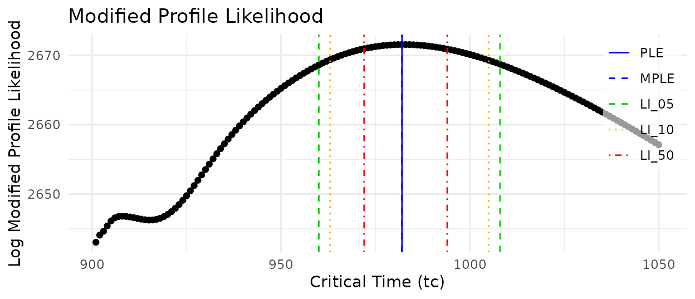
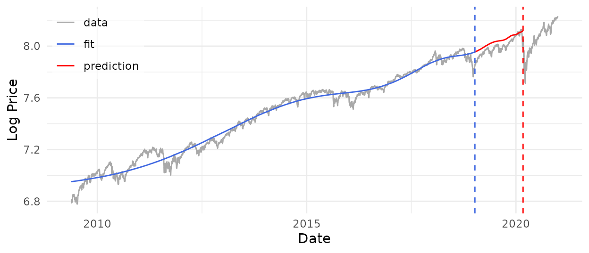
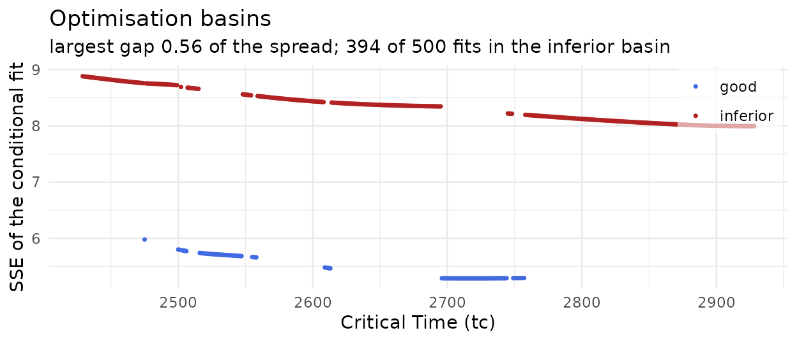

The model
lpplsF calibrates the log-periodic power law singularity
(LPPLS) model, which describes the faster-than-exponential growth of a
speculative bubble, decorated by oscillations that accelerate towards
its end. In the parameterisation of Filimonov and Sornette (2013), the
log-price before a critical time \(t_c\) is
\[ \ln p(t) = A + (t_c - t)^m \bigl[ B + C_1 \cos(\omega \ln(t_c - t)) + C_2 \sin(\omega \ln(t_c - t)) \bigr], \qquad t < t_c . \]
The critical time \(t_c\) is the most probable time for the bubble to end, \(m\) is the exponent of the power law, and \(\omega\) is the angular frequency of the log-periodic oscillations. The model is linear in \(A\), \(B\), \(C_1\) and \(C_2\), so for any given \((t_c, m, \omega)\) those four follow from least squares, and calibration reduces to a search over three nonlinear parameters.
A calibration is admissible only if \(B
< 0\), which makes the growth faster than exponential, and if
the damping \(D = m|B| / (\omega \sqrt{C_1^2 +
C_2^2})\) is at least \(0.8\)
(relaxed from the theoretical bound of 1). fit_lppls()
enforces both conditions, and searches within \(0.1 \le m \le 0.9\) and \(6 \le \omega \le
13\) unless told otherwise (Filimonov, Demos and Sornette
2017).
Package overview
Every analysis starts with fit_lppls(), which calibrates
the model to one window of data. The other functions evaluate the model,
read a calibration, move it through time, or test it against noise.
| Task | Functions |
|---|---|
| Evaluate the model |
eval_lppls(), SSE()
|
| Calibrate one window | fit_lppls() |
| Read a calibration |
print(), summary(),
plot(), lppls_curvature(),
residual_qq_plot()
|
| Draw a fit or a landscape |
fit_plot(),
sse_surface_plot(), sse_contour_plot()
|
| Date the start of a bubble |
lppls_rolling(),
lppls_lagrange(), lr_trend_test(),
rolling_tc_plot(), rolling_param_plot(),
chi_sq_np_plot(), chi_sq_lambda_plot()
|
| Test robustness to noise |
lppls_noise_sweep(),
noise_param_plot(), noise_tc_plot()
|
| Data |
spx, the S&P 500 daily close from 2009
to 2020 |
fit_lppls() has three modes. "F1" optimises
\(t_c\), \(m\) and \(\omega\) jointly. "F2" fixes
\(t_c\) at each point of a grid beyond
the data, optimises \((m, \omega)\)
there, and then optimises \(t_c\).
"MPL" uses the same grid to build a modified profile
likelihood for \(t_c\), from which
likelihood intervals follow (Filimonov, Demos and Sornette 2017).
Calibration of the model
First we simulate an LPPLS process with critical time at \(t_c = 1001\). The simulated series ends just before the critical time.
library(lpplsF)
set.seed(3630)
n_obs <- 1000
log_p <- eval_lppls(seq_len(n_obs), A = 8, B = -0.025, C1 = 0.0015,
C2 = 0.001, tc = n_obs + 1, m = 0.6, omega = 8) +
rnorm(n_obs, sd = 0.05)The landscape an optimiser has to navigate is far from simple. Below is the sum of squared errors over \(t_c\) and \(\omega\) on the first 900 observations, with every other parameter held at its true value. Along \(\omega\) it oscillates strongly, and every trough is a local minimum in which a single optimiser run can end.
sse_surface_plot(log_p[1:900],
params = list(tc = 1001, m = 0.6, omega = 8, A = 8,
B = -0.025, C1 = 0.0015, C2 = 0.001),
vary = c("tc", "omega"),
span = list(tc = c(901, 1090), omega = c(1, 20)),
static = TRUE)The calibration below holds out the last 100 observations, fits the first 900, and scans the next 150 time points for \(t_c\). In MPL mode every candidate \(t_c\) gets its own optimisation of \((m, \omega)\), and the resulting profile becomes a modified profile likelihood.
fit <- fit_lppls(log_p, fh = 150, hold_out = 100,
lower = c(0.1, 6, -0.03, 0.8),
upper = c(0.9, 13, -1e-14, 1e6),
m_init = 0.2, o_init = 12, num_searches = 1,
mode = "MPL", fp = TRUE, mpl_plot = TRUE)
fitLPPLS calibration (mode = MPL)
Window: n = 900 fh = 150 hold_out = 100 num_searches = 1
Estimate: tc = 982.04 m = 0.5911 omega = 7.5251 D = 1.053
SSE = 2.13785
Bounds: estimate interior; fits at a bound: m 0/150, omega 0/150
Basins: SSE 2.13786..2.281;
no distinct inferior cluster (largest gap 0.04 of the spread)
Filters: B out of range 0 D out of range 0
MPL: defined at 150/150 tc MPLE = 982
LI(0.05) [960, 1008] LI(0.10) [963, 1005]
LI(0.50) [972, 994]Read the printed report before anything else, because it says whether the numbers mean anything. Here they do. The estimate is interior, no conditional fit sits on a bound, the conditional fits form a single cluster, and the modified profile likelihood is defined across the whole grid, so nothing is flagged. The MPL estimate of the critical time is 982, and the widest likelihood interval, LI(0.05), runs from 960 to 1008 and contains the true value.
plot(fit, "fit")
plot(fit, "mpl")
Diagnostics
spx holds the daily close of the S&P 500 from 18 May
2009 to 31 December 2020. The calibration below uses everything except
the last 500 trading days, and passes the calendar as dates
so that every output shows dates as well as in indices.
spx_fit <- fit_lppls(log(spx$close), fh = 500, hold_out = 500,
lower = c(0.1, 6, -0.5, 0.8),
upper = c(0.9, 13, -1e-14, 1e6),
m_init = 0.2, o_init = 12, num_searches = 1,
mode = "MPL", dates = spx$date, style = "empirical",
fp = TRUE)
spx_fitLPPLS calibration (mode = MPL)
Window: n = 2428 fh = 500 hold_out = 500 num_searches = 1
Estimate: tc = 2717.01 (2020-03-03) m = 0.9000 omega = 6.1596
D = 1.545 SSE = 5.28678
Bounds: estimate m at a bound;
fits at a bound: m 500/500, omega 169/500
Basins: SSE 5.28678..8.88078; largest gap 0.56 of the spread splits
off 394/500 conditional fits (79%)
Filters: B out of range 0 D out of range 0
MPL: defined at 455/500 tc MPLE = 2717 (2020-03-03)
LI(0.05) [2696, 2757] (2020-01-31 .. 2020-04-29)
LI(0.10) [2696, 2757] (2020-01-31 .. 2020-04-29)
LI(0.50) [2696, 2744] (2020-01-31 .. 2020-04-09)
Diagnostics:
! m pinned at an optimisation bound - a boundary solution, so the
modified profile likelihood and its intervals are unreliable
! 394 of 500 conditional fits (79%) sit in a distinct inferior basin
(SSE >= 7.99365 against a best of 5.28678) - raise num_searches
! MPL undefined at 45 of 500 tc (det(X'X - H) <= 0 there)
! LI(0.05) spans 62 grid points but only 58 are above its cutoff -
range() bridges 4 that are not in the interval
! LI(0.10) spans 62 grid points but only 58 are above its cutoff -
range() bridges 4 that are not in the interval
! every tc inside an interval is a good-basin fit - the interval traces
where the search succeeded, not the curvature of the likelihoodThis report ends in a list of diagnostics, and each of them limits
what the estimate can be used for. \(m\) sits on its upper bound, in the point
estimate and in every conditional fit, so the estimate is a boundary
solution. The regularity conditions behind the modified profile
likelihood then fail, and its intervals are not inference. Most
conditional fits ended in a clearly worse local optimum, which one start
per candidate cannot avoid; num_searches is the setting
that addresses it. The remaining lines explain why the intervals look so
tight. They bridge gaps in the grid, and they trace where the search
happened to succeed.
plot(spx_fit, "fit")
plot(spx_fit, "basin")
None of this shows in the fit plot. The basin plot needs no extra computation, since it is drawn from the conditional fits already stored, and it shows the split directly: two tiers of fits instead of one smooth profile.
The flagged diagnostics do not point to a fault in the data or in the package. Boundary solutions, split basins and an undefined likelihood are properties of the LPPLS model itself, whose objective is non-convex and whose log-periodic parameters are only weakly identified.
Onset detection
The start of a bubble is as uncertain as its end.
lppls_rolling() repeats a calibration while the window
start \(T_1\) moves forward and the end
\(T_2\) stays fixed.
lppls_lagrange() then selects the start by Lagrange
regularisation of the normalised residual sum of squares (Demos and
Sornette 2019), and lr_trend_test() checks with a
parametric bootstrap whether the trend that the regularisation removes
can be told apart from noise.
roll <- lppls_rolling(log(spx$close), t1_seq = seq(1, 501, by = 25),
hold_out = 500, fh = 500,
fit_args = list(lower = c(0.1, 6, -0.5, 0.8),
upper = c(0.9, 13, -1e-14, 1e6),
m_init = 0.2, o_init = 12,
num_searches = 1, mode = "MPL"))
lag <- lppls_lagrange(roll, p = 0)
chi_sq_lambda_plot(lag)
lr_trend_test(roll, log(spx$close))lppls_noise_sweep() asks how much noise a calibration
can take before its estimates stop meaning anything. It recalibrates a
known signal at a range of noise levels, with Gaussian innovations by
default or with any generator you supply.
signal <- eval_lppls(seq_len(2000), A = 8, B = -0.025, C1 = 0.0015,
C2 = 0.001, tc = 2001, m = 0.6, omega = 8)
sweep <- lppls_noise_sweep(signal, sd_seq = seq(0.005, 0.1, by = 0.005),
fit_args = list(fh = 150, hold_out = 100,
m_init = 0.2, o_init = 12,
num_searches = 1, mode = "MPL"),
seed = 3630)
noise_tc_plot(sweep, true_tc = 2001)Both run many calibrations, so they are shown here without output. The guided tour on the package website runs both in full.
Further reading
The package website, https://mahovo.github.io/lpplsF/, has a guided tour that works through every function on simulated and real data, with interactive SSE landscapes. The theory behind the calibration scheme, the modified profile likelihood and the Lagrange regularisation is set out in the master’s thesis for which the package was written.
References
Demos, G. and Sornette, D. (2019). Comparing nested data sets and objectively determining financial bubbles’ inceptions. Physica A 524, 661–675. doi:10.1016/j.physa.2019.04.050
Filimonov, V. and Sornette, D. (2013). A stable and robust calibration scheme of the log-periodic power law model. Physica A 392(17), 3698–3707. doi:10.1016/j.physa.2013.04.012
Filimonov, V., Demos, G. and Sornette, D. (2017). Modified profile likelihood inference and interval forecast of the burst of financial bubbles. Quantitative Finance 17(8), 1167–1186. doi:10.1080/14697688.2016.1276298